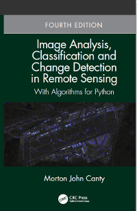

Mort Canty's Home Page
Dr. Mort Canty
Juelich, Germany
contact
Software

Blog
Publications
Change Detection on Earth Engine
Teaching
HU Berlin
ENVI/IDL Course, June 14-17, 2010
ZFL Bonn
Radiometric Normalization Course, March/April 2012
ZFL Bonn
, ENVI/IDL Course, November, 2013.
FZJ Juelich
, Statistics Course, February, 2014.
ZFL Bonn
, Image analysis with Python, April, 2015.
ZFL Bonn
, Multi-spectral and polarimetric SAR Image analysis, April, 2016.
FZJ Juelich
, Statistics Course, November 2016.
ZFL Bonn
, Python Scripting Course, April 2017.
ZFL Bonn
, GEE Workshop, April 10/11 2018.
(HTML Version)
,
ZFL Bonn
, Machine Learning Workshop, March/April 2019.
Links
Juelich Research Center
Allan Nielsen's Home Page
Google Earth Engine
Docker Documentation
Michael Galloy's Site
GPULib (CUDA interface for IDL)
David Fanning's IDL Page
IDL/ENVI Documentation Center
Numpy and Scipy Documentation
GDAL/OGR in Python
Center for Remote Sensing of Land Surfaces (ZFL-Bonn)